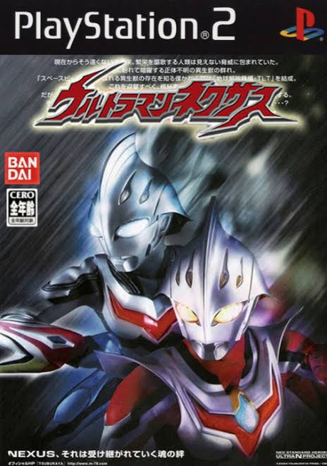
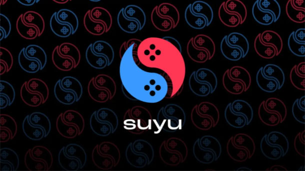

Apakah anda sedang mencari texture game PS2?
anda datang ke toko yang tepat,disini harganya murah cuma 15K InD:Ini adalah texture untuk ultraman nexus yang saya buat dalam bahasa indonesia,
dan menambahkan hero baru yang tidak jadi dimasukan baik ke dalam film atau game ini.

| Nama Produk | Texture PS2 |
|---|---|
| Pembuat | KRI-SKY09 |
| Harga | 15,000Rp |
| Deskripsi | Texture Premiums Terjemahan ke Bahasa apapun Dan menambahkan Hero baru. |
| Stok | Tak terbatas |